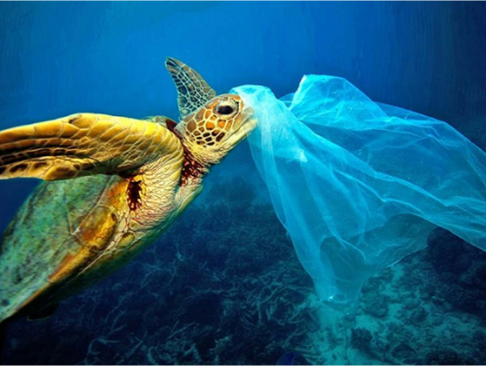

Poluição de Origem Terrestre
O título completo da Meta 14.1 é: "Até 2025, prevenir e reduzir significativamente a poluição marinha de todos os tipos, em particular proveninente de atividades terrestres, incluindo detritos marinhos e poluição de nutrientes."
O lixo que nós geramos
O plástico nos oceanos é um dos grandes problemas ambientais do nosso tempo. Para se ter uma ideia da dimensão do problema, a Ellen MacArthur Foundation estima que, até 2050, o mar terá mais peso em plástico do que em peixes.
Macro e microplásticos
Os animais frequentemente se sufocam com o lixo flutuante e muitos ingerem esses resíduos, confundindo-os com alimentos. Assim, o plástico entra na cadeia alimentar, e acredita-se que quem come frutos do mar regularmente ingere cerca de 11 mil pedaços de microplástico por ano.
100 mil
animais marinhos morrem ingerindo plástico.
11 mil
pedaços de microplásticos são ingeridos por quem come frutos do mar regularmente.

Pesca fantasma
A pesca fantasma ou equipamento fantasma refere-se a equipamentos de pesca que foram perdidos, despejados ou abandonados em nossos vastos corpos de água (Ghostfishing.org). Aparelhos feitos pelo homem projetados para capturar peixes e animais marinhos, como redes, palangres e armadilhas para peixes, são considerados capazes de pesca fantasma quando não supervisionados.